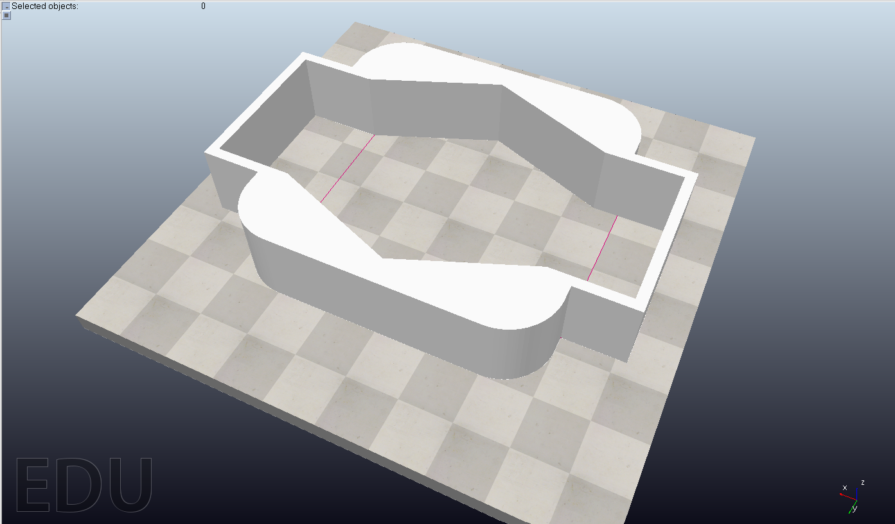
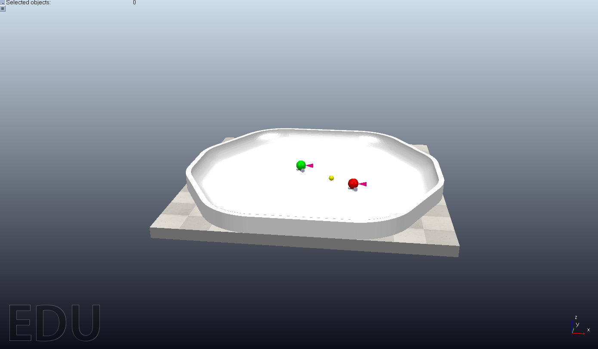
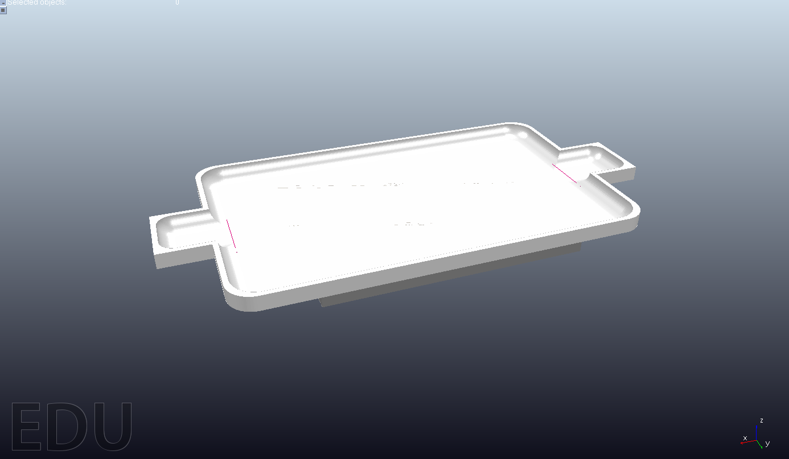
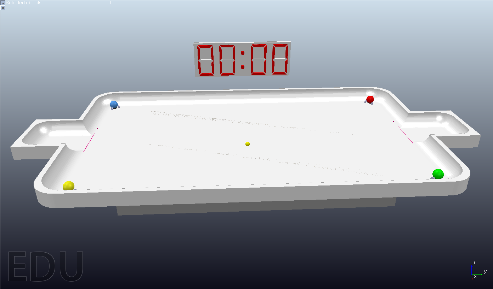

W10 <<
Previous Next >> 41023247
W11
場景:
初代測試場景
一開始，我們在如何研究場景大小及如何不讓球卡牆

次代測試場景
為了配合美觀，我們將其重新設計

最終場景
使用Onshape繪製場景，匯入Coppeliasim File>Import>Mesh
新增感測器
在Coppeliasim中新增感測器 Menu bar> Add>Proximity sensor>Ray type

4人連機
4人Bubblerob足球場景
將4人bubblerod加入倒場景中
用肝換來的4人連機計分板場景
最終版記分板:
使用Onshape繪製我們需要的七段顯示器圖檔，繪製完成後，匯入File>Import>Mesh之後進行爆炸拆件，Edit>Gourping>Divide selected shape
改變數字顏色:
讓元件變色的方法:
objectHandle = sim.getObjectHandle('ObjectName')取得物體
>originalColor = sim.getShapeColor(objectHandle, nil, sim.colorcomponent_ambient_diffuse)取得原始顏色
>newColor = {1, 0, 0}定義新的顏色
>sim.setShapeColor(objectHandle, nil, sim.colorcomponent_ambient_diffuse, newColor)設定新的顏

壓縮檔:
雙球員足球場景
單機計分板
瀏覽器中計分板設計.7z(含場景與控制程式)
玩家:
BLUE PLAYER
RED PLAYER
GREEN PLAYER
YELLOW PLAYER
其他
Bill(比爾一隻)
score board
w12 影片
W10 <<
Previous Next >> 41023247